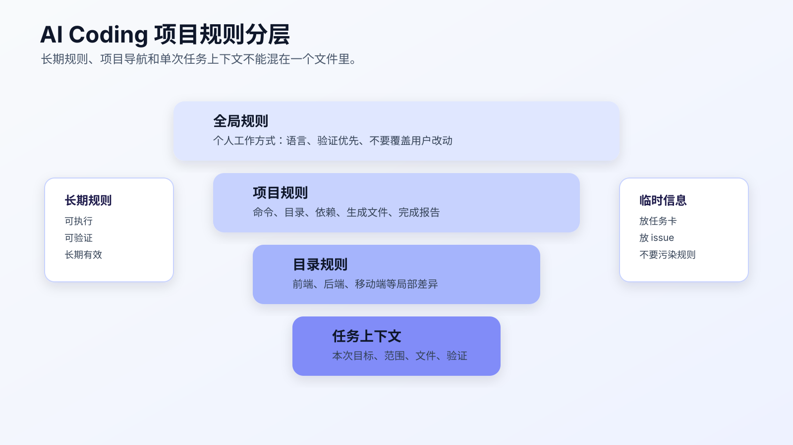
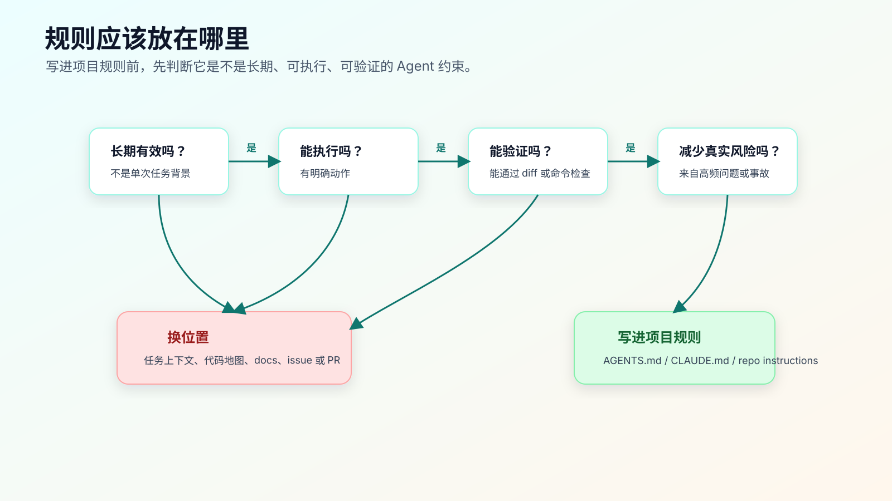

AGENTS.md / CLAUDE.md / Copilot Instructions
AI Coding 里，项目规则文件不是给 AI 写的“温馨提示”。
它的作用更具体：把每次都要遵守的工程约束放到仓库里，让 Agent 在读代码、改文件、跑命令、写完成报告时有稳定边界。
不同工具叫法不一样。Codex 有 AGENTS.md，Claude Code 常用 CLAUDE.md 承接项目记忆和约定，GitHub Copilot 支持 repository instructions 和自定义指令。文件名和加载规则会随工具变化，写作前要看官方文档；但背后的工程问题一致：
什么规则应该长期放在项目里？什么信息只属于单次任务？规则文件怎样写，才能真正约束 Agent，而不是制造更多噪音？

规则文件解决什么问题
没有规则文件时，每次任务都要重复交代：
先看测试。
不要改生成文件。
不要新增依赖。
不要做无关重构。
改完跑 npm test。
如果测试失败先分类。
重复几次以后，人会省略，Agent 会忘，结果又回到聊天式开发。
项目规则文件把这些稳定约束放进仓库。它解决四类问题：
第一，减少重复说明。
安装命令、测试命令、禁止修改目录、完成报告格式，不应该每次都靠人重新输入。
第二，限制 Agent 的默认行为。
Agent 遇到测试失败、生成文件、依赖缺失、格式化大文件时，如果没有规则，可能会按最容易完成的方向改。
第三，保持工具切换时的一致性。
你可能在 Codex、Claude Code、Cursor、Copilot 之间切换。规则文件能让项目约束留在仓库里，而不是留在某个聊天窗口。
第四，把事故沉淀成防线。
AI 曾经改错过生成文件，就写“不要改 generated”；曾经为了测试通过删断言，就写“不要删除断言来绕过失败”；曾经新增依赖没说明，就写“新增依赖先确认”。
规则文件不是写给未来的理想流程，而是写给真实踩坑后的下一次任务。
规则文件不应该写什么
规则文件最容易变成垃圾桶。
这些内容不应该长期放进去：
- 单次任务背景。
- 临时需求讨论。
- 某次 bug 的排查过程。
- 已经过期的方案争论。
- 大段产品 PRD。
- 个人猜测。
- “请认真”“代码要优雅”这类空话。
- 工具使用心得流水账。
例如，不要写：
- 最近我们在修登录问题，可能和 refresh token 有关。
- 这个项目最好尽量优化用户体验。
- AI 修改代码时要小心。
- 如果有机会，可以顺便重构 auth 模块。
这些话要么过期，要么不可执行，要么会诱导 Agent 扩大范围。
长期规则应该满足四个条件：
长期有效
可执行
可验证
能减少真实风险
如果一条规则不满足这四点，就应该放到任务上下文包、issue、PR 描述或临时计划里。
好规则和坏规则的区别
坏规则：
- 写高质量代码。
- 使用最佳实践。
- 注意不要出错。
- 尽量提升可维护性。
这类规则的问题是没有动作。Agent 看完也不知道该改什么、不该改什么、跑什么命令。
好规则：
- Run `git status --short` before editing.
- Do not edit files under `src/generated/`; update the schema and run generation instead.
- Do not add runtime dependencies without approval.
- Bug fixes must stay scoped to the failing behavior; do not mix refactor with bug fix.
- For behavior changes, run the focused test first and report the exact command output.
- If a test fails, classify it before editing again: baseline failure, introduced failure, environment failure, or requirement conflict.
这些规则有共同点：
- 能执行。
- 能检查。
- 能阻止常见误改。
- 不依赖抽象价值判断。
规则文件不是价值观文档。它是 Agent 工作边界。
规则必须绑定证据
一条规则如果没有证据出口，很容易变成口号。
比如：
- Run tests before completion.
这句话看起来没问题，但它没有说清楚跑什么、什么时候跑、怎么报告。Agent 很可能跑一个最轻的命令，然后写“测试通过”。
可以改成：
- For behavior changes, run one focused test that covers the changed path.
- If shared code changed, run the broader module test.
- Completion report must include exact command, exit result, and unverified paths.
这样规则就绑定了证据。
再比如：
- Keep changes scoped.
这句话也太虚。可以改成：
- Before editing, list expected files.
- If a new file must be edited, stop and explain why scope changed.
- Completion report must mention every changed file and reason.
AI Coding 里的规则不是为了表达态度，而是为了改变 Agent 的下一步动作。
一份项目规则的基本结构
可以从这个结构开始：
# Project Agent Instructions
## Project Shape
- Runtime entry:
- Main modules:
- Test directories:
- Generated directories:
## Commands
- Install:
- Focused test:
- Full test:
- Lint:
- Type check:
- Build:
## Worktree Rules
- Run `git status --short` before editing.
- Do not overwrite user changes.
- Keep changes scoped to the task.
## Change Rules
- Do not add dependencies without approval.
- Do not edit generated files directly.
- Do not mix refactor with behavior change.
- If scope must expand, stop and explain.
## Verification
- Report exact commands and results.
- Explain what each command covers.
- List residual risks before completion.
## Reporting
- Changed files.
- Why they changed.
- Commands run.
- Unverified paths.
这不是固定模板。不同项目可以删减。
文档项目可以不写 build。后端服务要写启动命令和测试命令。前端项目要写浏览器验证。老项目要写手动验证和覆盖缺口。
关键是别把规则文件写得像项目百科。它只需要覆盖 Agent 工作时最容易出错的边界。
规则分层：全局、项目、目录、任务
AI Coding 的规则不是一层。
可以按四层理解：
| 层级 | 内容 | 示例 |
|---|---|---|
| 全局规则 | 个人长期偏好和工作方式 | 回复语言、不要覆盖用户改动、验证优先 |
| 项目规则 | 当前仓库长期约束 | 命令、目录、依赖、完成报告 |
| 目录规则 | 模块差异明显时的局部约束 | 前端目录、后端目录、移动端目录 |
| 任务上下文 | 单次任务目标、风险、相关文件 | 这次修什么、不能改什么、怎么验证 |
项目规则不要承担任务上下文的职责。
比如“这次修 session 过期后首次提交失败”，不应该写进长期规则；它属于任务上下文。
而“不要改变登录接口协议，除非任务明确要求”，如果这是项目长期约束，可以放进规则文件。
目录规则也不要过早拆。只有当目录之间命令、风险和开发方式明显不同，才值得分目录写。例如：
frontend/AGENTS.md
backend/AGENTS.md
mobile/AGENTS.md
如果只是为了显得细，就别拆。规则层级越多，冲突和过期风险越高。
规则筛选流程
每次想把一句话写进规则文件前，先过这张流程。

第一问：这条规则是不是长期有效？
如果只对本次任务有效，放任务上下文。
第二问：它能不能执行？
“代码要优雅”不能执行。“不要混合重构和 bug fix”可以执行。
第三问：能不能验证？
“运行 npm test -- auth-refresh 并报告结果”能验证。“保证没有问题”不能验证。
第四问：它是否减少真实风险？
如果只是偏好，不要写太多。规则越多，Agent 越难抓住重点。
第五问：是否已有更合适的位置？
架构说明放 docs，接口契约放 spec，任务细节放 issue，规则文件只放 Agent 工作约束。
一个可直接迁移的 AGENTS.md
下面是一份精简版本：
# Project Agent Instructions
## Commands
- Install: `npm install`
- Focused test: `npm test -- <pattern>`
- Full test: `npm test`
- Lint: `npm run lint`
- Type check: `npm run typecheck`
## Worktree
- Run `git status --short` before editing.
- Do not overwrite user changes.
- Do not edit generated files under `src/generated/` or build outputs under `dist/`.
## Change Scope
- Keep bug fixes scoped to the failing behavior.
- Do not mix refactor with behavior changes.
- Do not add runtime dependencies without approval.
- If the task requires changing public API, stop and explain the impact first.
## Verification
- For behavior changes, run the focused test first.
- If shared code changed, run broader tests.
- Report exact commands and results.
- If a command cannot run, explain why and what evidence is missing.
## Failure Handling
- Do not edit code immediately after a test failure.
- First classify the failure: baseline, introduced, environment, or requirement conflict.
- Do not delete tests or weaken assertions to make tests pass.
## Completion Report
- Changed files.
- Why each file changed.
- Commands run.
- Result.
- Residual risk.
这份规则不长，但已经能约束很多常见问题。
你可以按项目改：
- Java 项目把命令换成
./mvnw test或./gradlew test。 - Go 项目换成
go test ./...。 - 前端项目补浏览器验证。
- 老项目补手动验证路径和覆盖缺口。
CLAUDE.md 怎么写
Claude Code 的 memory 文档把 CLAUDE.md 用作项目记忆和约定入口。写法上，原则和 AGENTS.md 很接近：放项目长期有效的开发约束、命令、结构、偏好。
可以这样组织：
# Project Memory
## Useful Commands
- `npm test`
- `npm run lint`
- `npm run typecheck`
## Architecture Notes
- Auth refresh logic lives in `src/auth/request.ts`.
- Generated API client lives in `src/generated/`; do not edit directly.
## Coding Rules
- Keep bug fixes scoped.
- Do not add dependencies without approval.
- Prefer existing test style.
## Verification
- Report commands and residual risk.
注意，不要把 CLAUDE.md 写成长期聊天记录。
如果一段信息只对当前 bug 有用，放任务上下文；如果是项目长期导航，才放 CLAUDE.md。
Copilot Instructions 怎么写
GitHub Copilot 的 repository instructions 和 custom instructions 适合给 Copilot 提供项目上下文和编码约束。
这里同样不要写大段背景。适合写：
- 项目使用的语言和框架。
- 测试命令和代码风格。
- 常见目录和生成文件。
- 不要新增依赖或改接口的约束。
- PR 或 review 时要重点检查的内容。
例如：
This repository is a React + TypeScript application.
Guidelines:
- Use existing component and test patterns.
- Do not edit generated API client files under `src/generated/`.
- Do not add runtime dependencies without approval.
- For behavior changes, include or update focused tests.
- Keep bug fixes scoped; do not include unrelated refactors.
Copilot instructions 往往更贴近 IDE 和 GitHub 工作流。它不一定替代 AGENTS.md，而是服务 Copilot 使用场景。
如果项目同时使用多种工具，建议先维护一份主规则，再按工具格式同步精简版本。不要让不同工具的规则互相冲突。
同步时还要保留差异。
比如 Codex 场景里，规则更强调仓库读取、命令验证、diff 和完成报告。Claude Code 场景里，CLAUDE.md 往往还会承担项目记忆作用。Copilot instructions 更贴近 IDE、PR 和 GitHub 工作流。Cursor rules 可能更贴近编辑器内的代码生成和目录规则。
所以不要把一份长规则原样复制到所有工具里。
合理做法是：
主规则：项目事实、禁止事项、验证要求、完成报告。
Codex：保留命令、diff、验证、权限边界。
Claude Code：保留项目记忆、架构入口、命令、长期约束。
Copilot：保留编码风格、测试模式、PR/review 重点。
Cursor：保留目录规则、生成文件限制、当前技术栈模式。
核心约束一致，工具细节分开。这样既不会冲突，也不会让某个工具读到大量无关信息。
多工具规则如何避免冲突
很多程序员会同时用 Codex、Claude Code、Cursor、Copilot。问题不是不能多工具，而是规则不能多套互相打架。
建议建立一个“主规则源”。
AGENTS.md 或 docs/ai-coding/project-rules.md
然后按工具需要派生：
CLAUDE.md
.github/copilot-instructions.md
Cursor rules
同步时遵守三点：
第一，核心约束一致。
比如“不要改生成文件”“新增依赖先确认”“bug fix 不混重构”，所有工具都应该一致。
第二，工具特有能力单独写。
Claude Code 的 hooks、Codex 的配置、Copilot 的 PR 场景，可以写在对应文件里，不要硬塞到所有规则。
第三，定期删旧规则。
规则文件不是只增不删。项目结构变了，命令变了，工具能力变了，旧规则要清理。
可以每月做一次 10 分钟检查：
git grep -n "npm test\\|pnpm test\\|mvn test\\|generated\\|dist/" AGENTS.md CLAUDE.md .github 2>/dev/null
这类命令不是为了机械找词，而是快速发现规则里是否还写着过期命令、过期目录和互相冲突的工具约束。
规则太多会怎样
规则太多会产生三个问题。
第一，Agent 抓不住重点。
如果规则文件几千行，真正关键的“不要改生成文件”可能被淹没。
第二，规则冲突。
前面写“保持最小 diff”，后面又写“顺便优化代码结构”，Agent 会自己选择。
第三，过期信息污染上下文。
旧命令、旧目录、旧架构说明，会把 Agent 带到错误路径。
所以规则文件要定期做瘦身。
可以用这个检查：
## Rule Review
- 这条规则过去一个月是否仍然有效？
- 是否能被执行或验证？
- 是否和其他规则重复或冲突？
- 是否更适合放到代码地图、任务上下文或 docs？
- 是否来自真实事故或高频风险？
删规则和加规则一样重要。
规则文件如何验证有效
写了规则，不代表 Agent 会稳定遵守。
可以用一个低风险任务试跑：
请读取项目规则，然后完成一个小 bug fix。
实现前先输出：
- 你读到了哪些规则。
- 这些规则如何影响你的计划。
- 哪些文件不能改。
- 需要跑哪些命令。
如果 Agent 输出里完全没有提到关键规则，说明规则写法或加载方式有问题。
也可以故意观察它是否会踩线：
- 它是否尝试修改 generated。
- 它是否直接新增依赖。
- 它是否把 refactor 混进 bug fix。
- 它是否跑了错误命令。
- 它是否没有报告剩余风险。
这些不是要为难 Agent，而是验证规则是否真的进入工作流。
规则如何进入一次任务
规则文件写好了，还要让它进入当前任务。
实际操作可以很简单：
请先读取项目规则文件，不要改代码。
输出：
- 本任务必须遵守的规则。
- 这些规则会影响哪些文件和命令。
- 哪些动作需要先获得确认。
- 如果规则和任务冲突，先指出冲突，不要自行取舍。
这一步适合中高风险任务。低风险任务不用每次都复述规则。
如果 Agent 读完规则后只输出“我会遵守项目规范”，说明规则没有变成执行计划。你要让它具体到文件、命令、限制和停止条件。
例如前端改动：
规则影响：
- 不能改 generated client。
- UI 改动需要浏览器验证。
- 只允许修改 `src/pages/order/` 和对应测试。
- 如果需要改 API response shape，先停止。
这种输出才有用。
规则没有生效时怎么排查
规则写了但 Agent 没遵守，先不要急着把规则写得更长。
按顺序查四件事。
第一，工具是否真的加载了规则。不同工具的文件名、位置和作用范围不同，AGENTS.md、CLAUDE.md、repository instructions 不一定互相识别。先看官方文档和当前工具输出，不要凭印象判断。
第二，规则是否太抽象。比如“保持高质量”不会改变行动，“如果测试失败，先分类 baseline、introduced、environment、requirement conflict”才会。
第三，规则是否冲突。前面写“不要改 public API”，后面又写“必要时调整接口更合理”，Agent 会自己取一个看起来顺手的方向。
第四，任务上下文是否覆盖了规则。一次任务里如果写“可以自由重构”，就会和项目规则里的“小 diff”冲突。冲突时应该先停下来让人确认，而不是让 Agent 自行取舍。
很多时候，修规则不是加一段说明，而是删掉冲突、改成动作、补上验证出口。
常见错误
错误一：规则文件写成愿望清单。
“提高质量”“保持优雅”“遵循最佳实践”都太虚。换成具体动作。
错误二：把任务背景写进长期规则。
一次 bug 的上下文应该放任务上下文包。长期规则只放稳定约束。
错误三：不写验证命令。
没有命令，Agent 就会猜。至少写 focused test、full test、lint 或手动验证路径。
错误四：规则文件从不更新。
项目命令变了，目录变了，生成文件路径变了，规则也要变。
错误五：多工具规则不一致。
一个工具允许改 generated，另一个工具禁止改 generated，最后一定出问题。核心约束要统一。
错误六：把规则写成给人的项目文档。
架构背景、业务解释、接口历史可以放 docs 或 spec。规则文件只保留 Agent 工作时必须遵守的边界。
错误七：只写禁止，不写替代路径。
不要只写“不能改 generated”。还要写“应该改 schema，然后运行生成命令”。否则 Agent 知道不能做什么，却不知道该怎么做。
今天可以先加的五条规则
如果你的项目还没有规则文件，先从五条开始：
# Project Agent Instructions
- Run `git status --short` before editing.
- Do not overwrite user changes.
- Do not add dependencies without approval.
- Do not edit generated files or build outputs.
- For behavior changes, run a focused verification command and report the result.
然后根据最近一次 AI Coding 事故补一条：
- Do not delete tests or weaken assertions to make tests pass.
或者：
- If a fix touches payment, order status, or auth, stop and ask for explicit plan approval first.
规则要从真实风险长出来。
迁移建议
把规则文件落到项目里后，下一次任务先让 Agent 读它：
请先读取项目规则文件。
不要改代码。
输出：
- 你读到的关键规则。
- 本任务需要遵守的硬约束。
- 计划中哪些动作受这些规则影响。
如果它读完规则还能给出合理计划，说明规则文件开始发挥作用。
如果它读完只复述空话，说明规则还不够可执行。
项目规则解决的是长期约束。单次任务还需要自己的上下文包：目标、范围、相关文件、验证命令和开放问题。接下来就讲一次需求到底该给 AI 什么。
常见问题
AGENTS.md 和 CLAUDE.md 要不要同时维护？
看工具使用情况。
如果项目主要用 Codex，先维护 AGENTS.md。如果主要用 Claude Code，先维护 CLAUDE.md。如果两个工具都高频使用，可以维护一份主规则，再同步精简版本。不要为了“兼容所有工具”复制多份没人维护的长文档。
规则文件应该写中文还是英文？
看团队和工具习惯。
中文项目、中文协作可以写中文；工具关键词、命令、路径、错误分类建议保留英文。关键不是语言，而是规则是否具体、可执行、可验证。
规则越详细，Agent 表现越好吗？
不是。
过长规则会占上下文，也会让关键约束被淹没。规则应该少而硬：命令、禁止目录、依赖策略、验证要求、完成报告、失败处理。一次性背景不要放进去。
工具官方规则变化怎么办？
工具能力和加载规则变化很快，涉及 AGENTS.md、CLAUDE.md、Copilot instructions、hooks、Skill、subagents 时，写作和改项目之前都应该看当前官方文档。不要凭几个月前的印象写死。
规则文件能替代代码审查吗？
不能。
规则文件能减少重复错误，但它不会理解业务取舍。AI 生成的 diff 仍然要审查，尤其是公共接口、测试断言、依赖、数据和权限相关改动。
可复查资料
- OpenAI Codex
AGENTS.md指南：https://developers.openai.com/codex/guides/agents-md - Anthropic Claude Code memory：https://code.claude.com/docs/en/memory
- GitHub Copilot repository instructions：https://docs.github.com/en/copilot/how-tos/copilot-on-github/customize-copilot/add-custom-instructions/add-repository-instructions